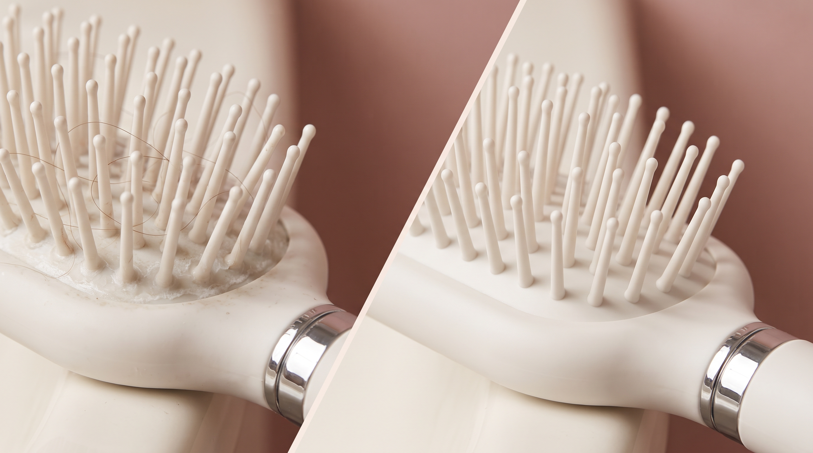

Brosse à cheveux sale : quels risques pour les cheveux ?
La réponse courte : une brosse sale redépose sur vos cheveux tout ce qu'elle a accumulé, ralentit le brossage et peut accélérer la casse. Voici les risques concrets, au-delà de la simple question d'esthétique.

Le regraissage prématuré des longueurs
C'est le risque le plus direct. Une brosse chargée de sébum accumulé redistribue cette matière grasse sur des cheveux fraîchement lavés à chaque passage. Résultat : les longueurs et les racines regraissent plus vite qu'elles ne le devraient, donnant l'impression illusoire d'avoir "le cheveu gras" alors que le problème vient de l'accessoire.
Un cuir chevelu davantage exposé
Résidus, bactéries et cellules mortes accumulées entrent en contact direct avec le cuir chevelu à chaque brossage. Sur une peau déjà sensible, cela peut entretenir des irritations, des démangeaisons, voire favoriser l'apparition de petites imperfections aux zones de contact.
Une glisse réduite, plus de tiraillements
Une brosse encombrée perd en fluidité. Les picots, alourdis par les résidus, accrochent davantage les mèches au lieu de glisser librement. Ce frottement supplémentaire augmente les tiraillements, particulièrement problématiques sur cheveux bouclés ou fragilisés, où chaque accroc peut casser une boucle.
Un aspect général terni
Même bien lavés, des cheveux brossés avec un outil sale peuvent paraître plus ternes et moins soyeux. La cause est souvent invisible à l'œil nu : ce sont les micro-résidus redéposés à chaque passage qui alourdissent la fibre capillaire.
Un signal souvent mal interprété
Beaucoup de personnes changent de shampoing ou de routine capillaire en pensant régler un problème de cheveux gras ou ternes, sans jamais soupçonner leur brosse. Avant de modifier toute une routine, vérifier l'état de sa brosse reste le réflexe le plus rapide et le plus économique.